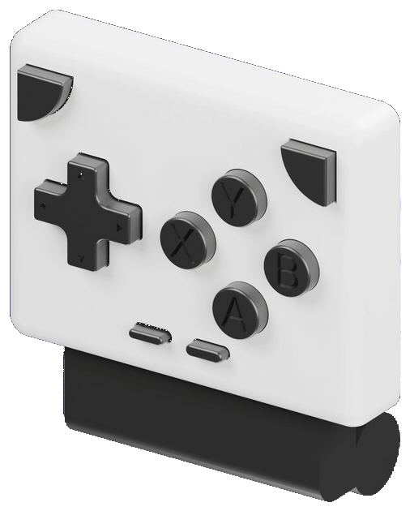
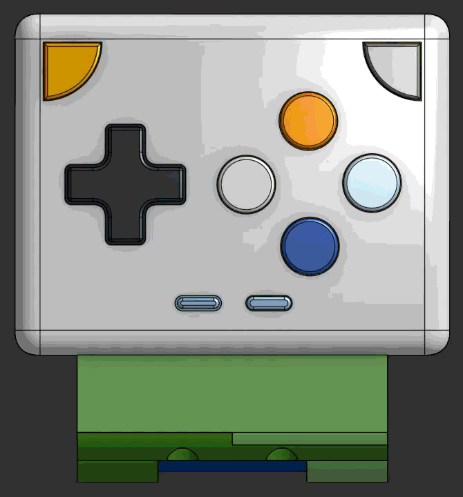

Open source hardware · RP2040 / RP2350 · USB HID
JOYFON
Pocket Handheld Controller
Tired of fighting touch controls in your handheld emulator? Miss the tactile click of your old consoles? The feeling is mutual. Joyfon is a physical controller for your phone that brings all of that back, plus tons of nostalgia — and because the hardware, the firmware and the printed shell are all open, you can mod every one of them to your own taste and pure retro enjoyment.

Hardware
A printed shell and one purple board.
The case is modelled in Onshape and prints in twelve parts — body, back plate, hinge, USB cover and a cap for every button. The PCB is a single-sided KiCad design carrying twelve tactile switches and the Pico.

What's in the box
Everything, actually open.
Board
Controller PCB
Carries the twelve tactile switches, the D-pad and the Pico.
Board
Male USB PCB
The plug that reaches the phone's port, so nothing dangles off the side.
Interconnect
Flex cable
Links the two boards across the hinge and keeps folding with it.
Mechanism
Hinge design
Clamps the controller onto the handset and swings out of the way when you're done.
Enclosure
Fully customizable shell
Printed in twelve parts, down to every button cap. Resize it for your own phone.
CAD
Open it in Onshape ↗
The live model. Fork it and mod the shell instead of settling for this one.